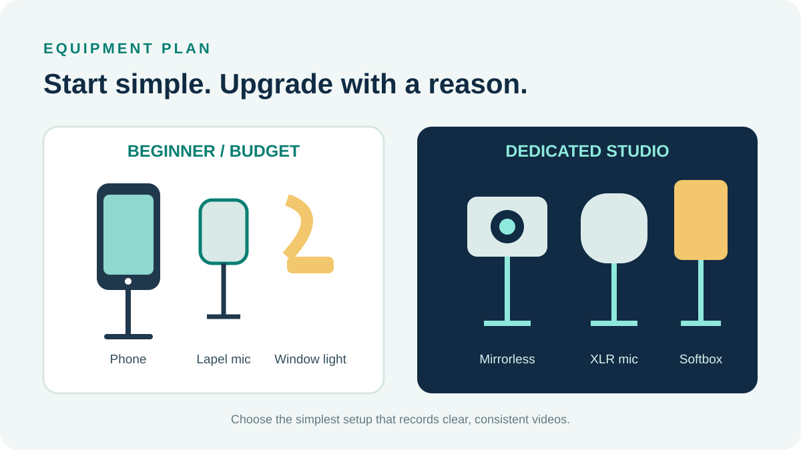
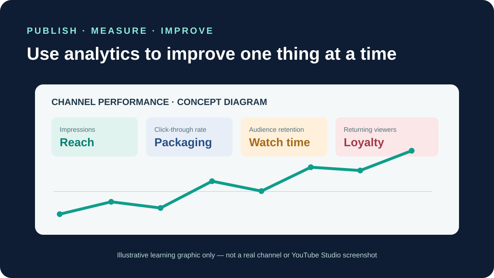

1. Choose a niche and define the viewer you want to help
Before buying cameras or microphones, get clear about who you are making videos for and what problem each video solves. When a channel jumps between unrelated topics, viewers may not know what to expect next. Define a focused audience and a clear channel promise, then test it with a set of related videos.
Use a three-circle niche filter
- Your knowledge or skill: focus on subjects you can explain clearly and explore across dozens of useful episodes without running out of practical ideas.
- Audience demand: look at recurring questions in YouTube search autocomplete, viewer comments, forums and real conversations with your target audience.
- Long-term value: choose a niche where viewers may value deeper expertise—through services, workshops, memberships or trusted product recommendations. Disclose commercial relationships clearly.
Example: “This channel helps small business owners plan and shoot clearer marketing videos with practical, affordable studio setups.” Use this promise to decide whether an idea belongs on the channel.
2. Choose equipment that fits your budget and recording environment
You do not need a cinema camera to start. A modern smartphone, a steady tripod, a close microphone and soft lighting are enough to produce clean, watchable videos. Upgrade your gear only when you hit a real technical limitation—not just because a new model launches.
| Category | Beginner / budget setup | Dedicated studio setup |
|---|---|---|
| Camera | Modern smartphone using its rear camera; record at 1080p or 4K if storage and light permit | Mirrorless camera such as Sony ZV-E10, Sony A6700 or Canon R50; choose based on autofocus, recording limits, lens options and workflow |
| Microphone | Wired lavalier or reliable wireless microphone, positioned consistently | Dynamic XLR microphone such as RØDE PodMic or Shure MV7X with a compatible interface; check input and gain needs |
| Lighting | Soft window light plus a reflector or one diffused LED | Soft key light, gentle fill and optional background/rim light |
| Stability | Sturdy tripod with a secure phone mount | Video tripod with a suitable head; boom arm for desk recording |
| Editing | DaVinci Resolve, VN or another editor that suits your device and workflow | DaVinci Resolve Studio, Adobe Premiere Pro or Final Cut Pro, depending on platform and team needs |

Three production rules that make a visible difference
- Lock exposure and focus: prevent brightness shifts and focus hunting by locking exposure and testing autofocus reliability before recording.
- Keep the mic close: clip a lavalier neatly on the upper chest, away from collar friction, or place a desk mic roughly 4–6 inches from your mouth at a slight angle to reduce room echo.
- Frame at eye level: keep the lens near eye height with comfortable headroom, and check the background frame for clutter before starting.
For more on room acoustics, microphone choices, camera positions and lighting, read our professional video podcast studio setup guide. It covers audio clarity and studio setup in more detail.
3. Build channel branding that makes the promise clear
Branding should help a new visitor quickly understand the channel. It does not need to be complicated, but it should be consistent across the profile image, banner, thumbnails and video graphics.
- Channel name: keep it memorable, readable and easy to say. Avoid names that are too close to established creators or trademarks.
- Profile image: use a clear headshot for a personal channel or a simple logo for a business channel. Export a square, high-resolution image and check its circular crop at small sizes.
- Channel banner (2560 × 1440 px): state what your channel delivers and your upload rhythm. Keep all key text inside the central safe area so it is not clipped on phones or TVs.
- About section: explain who the channel helps, what it publishes and how often viewers can expect new videos. Add only relevant links and a monitored business contact address.
4. Package each video clearly and improve YouTube search discovery
Discovery starts with a useful topic and a clear promise. A thumbnail and title should work together: the title explains the subject while the thumbnail makes the idea easy to recognise. Do not promise results the video does not deliver.
Thumbnail and title basics
- Design a 16:9 thumbnail at 1280 × 720 pixels, using a clear subject and readable contrast. Keep the file within YouTube’s current upload limits.
- Use a few meaningful words only when they improve understanding. Check the thumbnail at phone size.
- Write clear, natural titles: place your primary topic early when it reads naturally, so viewers quickly understand what the video covers. Avoid awkward keyword stuffing.
Description, chapters and viewer experience
- Strong opening lines: use the first two lines of your description to summarise what viewers will learn, followed by relevant links and resources.
- Helpful video chapters: add accurate timestamps starting at 00:00 with clear section labels so viewers can navigate longer tutorials.
- Deliver value in the first 30 seconds: skip long animated intros. Confirm the viewer’s problem quickly and move into the solution.
- Review captions: proofread auto-captions for brand names, technical terms and local-language words to improve accessibility and clarity.
Search terms are useful clues, but audience satisfaction matters. Review impressions, click-through rate, average view duration and retention together rather than chasing a single metric.
5. Understand YouTube Partner Program eligibility and revenue options
YouTube has an expanded Partner Program entry level and a higher threshold for advertising revenue sharing. Meeting a numerical threshold does not guarantee acceptance: the channel must also pass YouTube’s policy review and satisfy account requirements. The figures below reflect YouTube’s published eligibility guidance checked on 25 November 2026; always confirm the Earn tab in YouTube Studio for your channel and country.
Earlier access to fan funding and selected Shopping features
- 500 subscribers
- At least 3 valid public uploads in the previous 90 days
- Either 3,000 valid public watch hours on long-form public videos in the previous 12 months, or 3 million valid public Shorts views in the previous 90 days
This tier can unlock eligible features such as channel memberships, Super Chat, Super Stickers, Super Thanks and Shopping, subject to feature-specific requirements and country availability. It is not the same as full ad-revenue sharing.
Full advertising revenue sharing
- 1,000 subscribers
- Either 4,000 valid public watch hours on long-form public videos in the previous 12 months, or 10 million valid public Shorts views in the previous 90 days
This higher tier can provide Watch Page Ads, Shorts Feed Ads and YouTube Premium revenue sharing, subject to acceptance and the relevant monetization modules. Watch time from the Shorts feed does not count toward the 4,000-hour long-form threshold. Views or watch time from paid ad campaigns do not count toward these eligibility thresholds.
Follow YouTube channel monetization policies, live in an eligible country or region, keep two-step verification on, have access to advanced features, maintain no active Community Guidelines strikes and link one active AdSense for YouTube account when applying. YouTube reviews the channel; thresholds alone do not automatically approve it.
Official reference: Expanded YouTube Partner Program eligibility and YouTube Partner Program overview and policies.
Build more than one revenue path
- Services and client leads: demonstrate your process and invite relevant enquiries without turning every video into an advertisement.
- Affiliate recommendations: recommend products you have genuinely evaluated, disclose affiliate relationships and keep claims accurate.
- Brand partnerships: work with relevant brands and clearly disclose paid promotions in line with platform and legal requirements.
- Digital products and training: sell templates, workshops or courses only when you can support the value promised.
6. Create a repeatable publishing and improvement routine
Choose a schedule you can sustain alongside research, recording, editing and community replies. A useful starter workflow is to plan a small cluster of related topics, batch-record when practical, prepare titles and thumbnails before publishing, then review performance after enough viewers have seen the video.

- Publish a focused first group of videos and make each one answer a clear audience question.
- Review which topics attract the right viewers, not only which videos receive the most views.
- If impressions are healthy but clicks are weak, revisit title and thumbnail clarity.
- If viewers leave early, check whether the opening delivers the promise and whether the pacing is clear.
- Use comments and repeated questions to plan the next useful video.
Frequently asked questions
How many videos should I publish before judging growth?
Aim to publish at least 10–20 focused videos before drawing firm conclusions. This can give you enough data to spot which topics resonate and help you improve audio, pacing and thumbnails with each upload. It is a useful learning target, not a guarantee of growth.
Should I start with Shorts or long-form videos?
Use both intentionally if your schedule allows. Long-form videos can build deeper trust, authority and watch hours, while Shorts can help new viewers discover bite-sized ideas that lead back to your main channel.
Can I use copyrighted music in the background?
Do not assume a commercial song is safe to use. Use music you created, music licensed for the intended use, or tracks from the YouTube Audio Library while following each track’s attribution and usage terms. A copyright claim or restriction can affect a video’s availability or monetization.
Ready to launch your channel?
Start with a clear niche, a simple and reliable recording setup, useful video ideas and a consistent review process. Improve one part of the workflow at a time rather than waiting until you can afford a perfect studio.
Creator Support Amravati can discuss multi-camera shooting, studio setup, editing, thumbnail design and YouTube content workflows based on your project scope. Explore our Podcast Production, Video & Photo Production and Video Editing services.